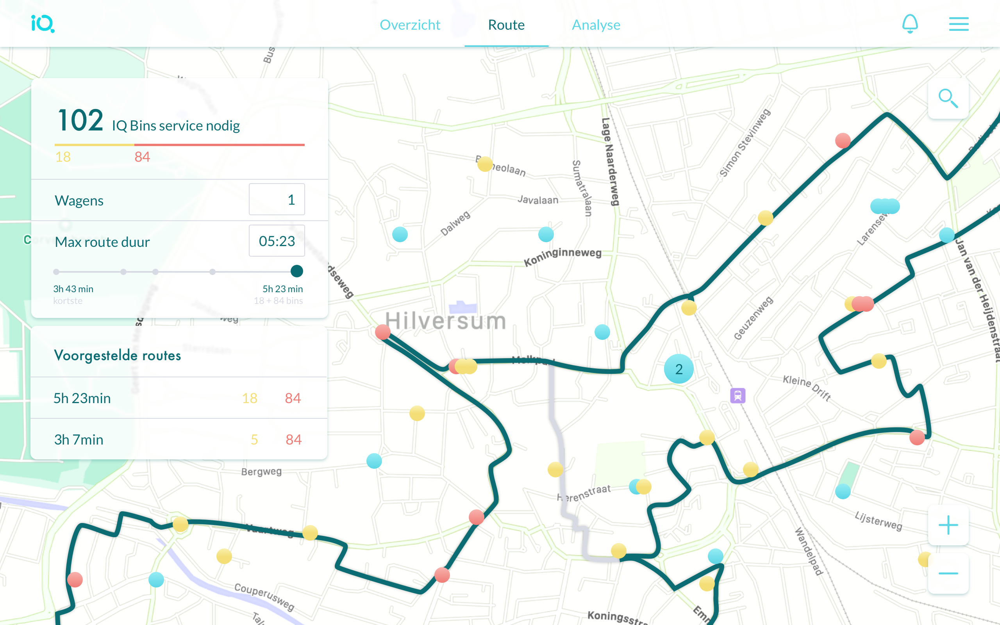
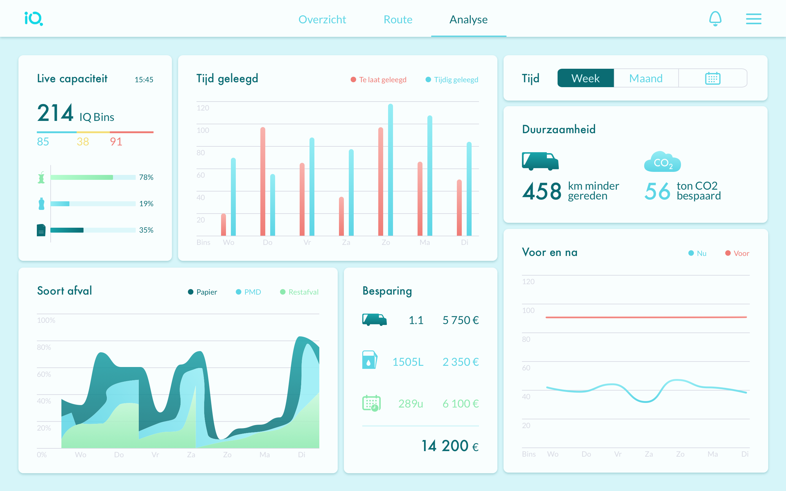
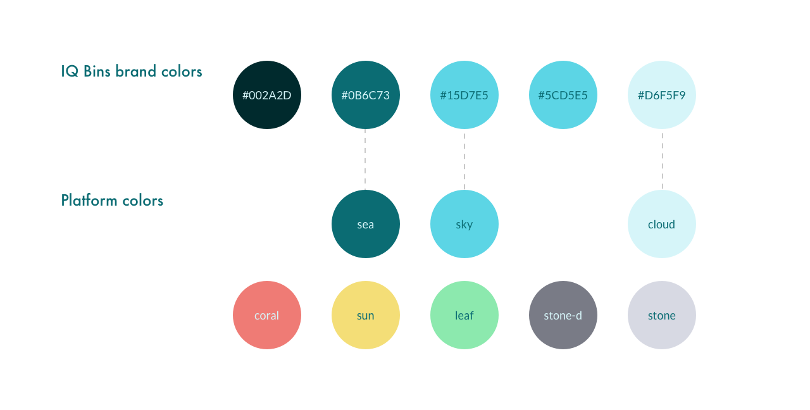
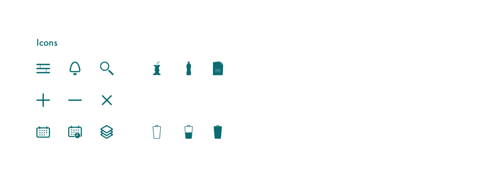

Interaction design
Smart emptying for smart trash cans. Re-design for IQ Bins tracker targets sustainable waste collection from bins with sensors.
An IQ Bin has a sensor indicating how full(%) the bin is. There are 2 types of bins designed for urban environment:
Now imagine these bins around a city. In time they provide a lot of amazing data about how waste-busy streets are. It allows to optimize bins' positions and waste collection routs. And so save time and reduce emission.
In the system a bin has 3 states: rather empty (<50%), rather full (50-75%) and full (>75%). These values are defined by underlying calculations.
Some states of the overview page:
To access real-time sensor statistics user has to select a bin in the street list. The below states show 3- and 1-sensor bins.
In this section system suggests most feasible waste collection routs: the best (default) route and some shorter options. Each route route includes all 'full' and some 'rather full' bins.
If and when IQ Bins Tracker will feature prediction (how soon a bin will get full based on the past data), routing can be largely improved. Namely, turned into an approximate future collection schedule with pre-baked routes. Then each best route may skip the outlying full bins as they will not get full till next collection (instead of bluntly going through all of them every time).
[Poor choice of] statistics the system collects (so far) - per week, month or custom period.
Since it's a redesign, I don't have a saying in what's here. What you see are: real time bin states, collection time (bins emptied in time vs too late), emission reduction in km and CO2 volume (comparing to past data), waste volume by type, fuel economy, bins before and after installation of smart ones.
I have issues with pretty much every widget. I can (and would) accomodate both waste volumes and collection times(in time / too late) in one major timeline. All the comparison with 'before you purchased our product' (if marketing insists) should go away from above the fold as soon as there's more relevant data to show. Total capacity of plastic waste bins across the town is a cute placeholder number: it is usefull as the average patient's body temperature across a hospital. Time / emission / km / money saved are different units for one value, and it deserves a separate plot. Just not now, but when prediction is available (so the more data we collect the more we optimize the routes) - then it is _actual_ dynamic. And I always can come up with more ;)
Platform colors extend IQ Bins brand colors:
 